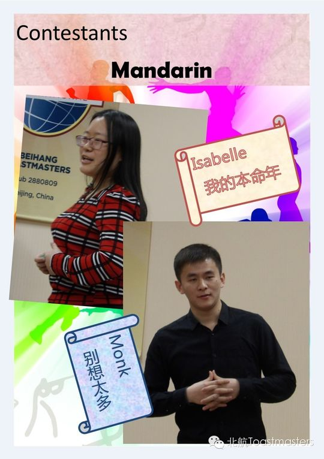
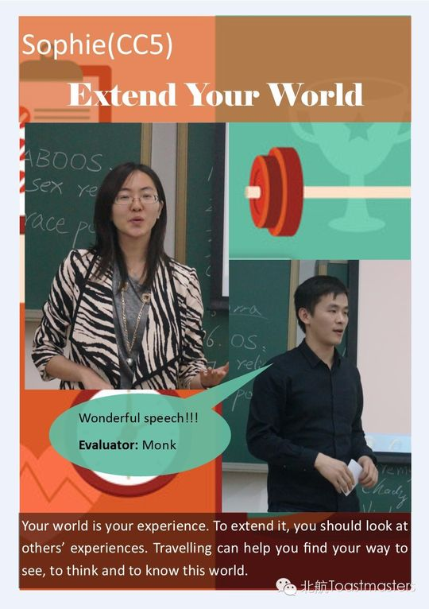
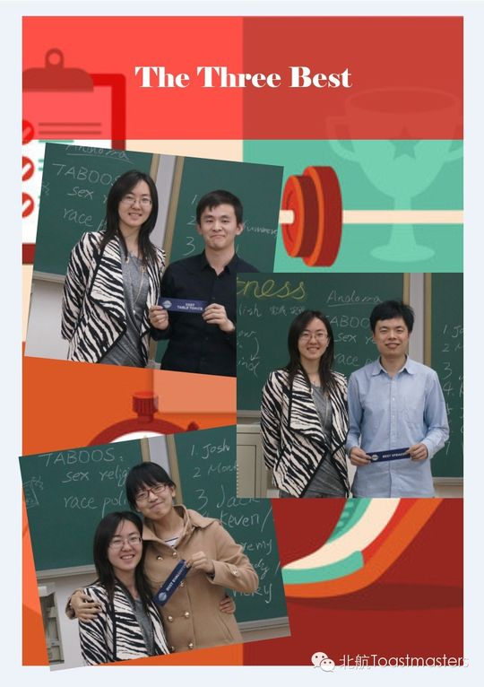

Monk
从破冰到毕业一路走心的"神僧"VPE，俱乐部最有人情味的教育担当与段子手。
会员活跃 2014–2015出现 13 次 · 13 篇5 场演讲
Monk 是北航 Toastmasters 早期的核心成员之一。2014 年初新学期开学的第 50 次例会上，他以"新任教育副主席（VPE）"的身份登场，并献上了自己的破冰演讲 How I See Myself，借阿波罗神庙"认识你自己"的箴言讲述自己的故事——这既是他个人成长的起点，也是他作为 VPE 服务俱乐部的开端。
在随后的一年里，他几乎是会议里最活跃的身影：CC2《Power of Faith》展现了他幽默外表下严肃而有思想的一面，CC5、CC6 一路稳步推进；他频繁担任即兴主持（TTM）、即兴点评官、会议主持人（Toastmaster），还多次主持过 Persistence、Money、Friends & Friendship 等主题例会。作为 VPE，他负责统计成员的角色参与、推动大家承担职责，成员成长榜上也把联系他列为答疑窗口。
他身上有股"神僧"般的反差魅力：平日是逗乐全场的段子手，认真起来又能带大家走一段关于信念的精神之旅。中间他曾"神秘消失"半年，再回来时用一篇 CC3《My Past Six Months》揭开谜底；2015 年春季比赛里，他作为中文演讲选手被塑造成华山论剑中那位扫地僧，自带武侠气场。
2015 年 4 月毕业季例会上，他带来 CC4《Think It Simple》，劝大家把复杂的人生过得简单一些。同年 6 月的第 100 次纪念例会上，他与 Dale 一同接受了毕业仪式的送别，被称作"俱乐部成立以来最走心的 VPE"。而他那句"上半场来不了咱来下半场啊"，也成了"头马人永不毕业"最生动的注脚。
里程碑
- 2014-03-07 出任VPE并破冰 ↗第50次例会以新任教育副主席身份登场，完成破冰演讲How I See Myself。
- 2015-01-23 归来：神秘半年揭秘 ↗第86次例会带来CC3 My Past Six Months，揭开消失半年的去向。
- 2015-03-13 参加2015春季中文演讲比赛 ↗作为中文组选手参赛，被誉为华山论剑里的扫地僧。
- 2015-06-17 第100次例会毕业送别 ↗与Dale一同接受毕业仪式，被称为俱乐部成立以来最走心的VPE。
闯关之路 · Competent Communication
✓
CC1
破冰
✓
CC2
组织你的演讲
✓
CC3
明确目标
✓
CC4
怎么说
CC5
肢体在说话
CC6
声音的变化
CC7
研究你的主题
CC8
善用视觉辅助
CC9
以理服人
CC10
激励听众
做过的演讲 · 5 场
破冰演讲。以阿波罗神庙箴言"认识你自己"为引，讲述自己的故事，让大家认识这位新任VPE。
在幽默之外展现严肃而深思的一面，分享当时网络热议话题，带大家感受信念与信仰的力量。
揭开自己神秘消失半年的去向，回顾这段经历。
作为中文演讲比赛选手参赛，被塑造为华山论剑中身手不凡的扫地僧形象。
在毕业主题例会上探讨如何把复杂的人生想得简单一点、活得放松一些。
担任过的会议角色
Toastmaster（会议主持人）×2Table Topic Master（即兴主持TTM）×3Table Topic Evaluator（即兴点评官TTE）×3
为俱乐部做的事
- 担任教育副主席（VPE），统筹会员的项目进度与角色分配
- 建立并维护成员角色参与统计（Member Growth榜），作为成员成长的答疑联系人
- 多次主持例会、即兴环节并担任点评官，活跃会议氛围
- 作为中文选手参加2015年春季演讲比赛，代表俱乐部参赛
- 以"头马人永不毕业"的态度，毕业后仍承诺常回俱乐部
照片墙 · 时间线
共 22 帧，其中 16 帧已用人脸识别确认是本人（带 ✓）。
 ✓
✓ ✓
✓ ✓
✓ ✓
✓ ✓
✓
✓ ✓
✓ ✓
✓ ✓
✓ ✓
✓ ✓
✓
✓
✓ ✓
✓ ✓
✓ ✓
✓


完整足迹 · 13 次出现（点开，每条可跳转原文）
- 2014-03-06第50次 · 作为新任教育副会长做CC1演讲《How I See Myself》
- 2014-03-20第52次 · 担任即兴演讲主持
- 2014-04-04第54次 · 担任即兴演讲点评官
- 2014-04-08成长统计:共担任3次角色TTM,TTE,CC1;并任VPE
- 2014-04-10第55次 · 担任即兴演讲主持
- 2014-04-17第56次 · 做CC2备稿演讲《Power of faith》
- 2014-04-22作为户外烧烤活动联系人
- 2014-05-16第59次 · 担任即兴演讲点评官
- 2014-06-05第62次 · 担任第62次会议主持人
- 2015-01-22第86次 · 做备稿演讲My Past Six Months，回归俱乐部
- 2015-03-12第87次 · 参加春季比赛中文演讲
- 2015-04-03第90次 · 做备稿演讲Think It Simple
- 2015-06-17第100次 · 在毕业仪式上被送别，被誉为最走心的VPE
“上半场来不了咱来下半场啊！！！”